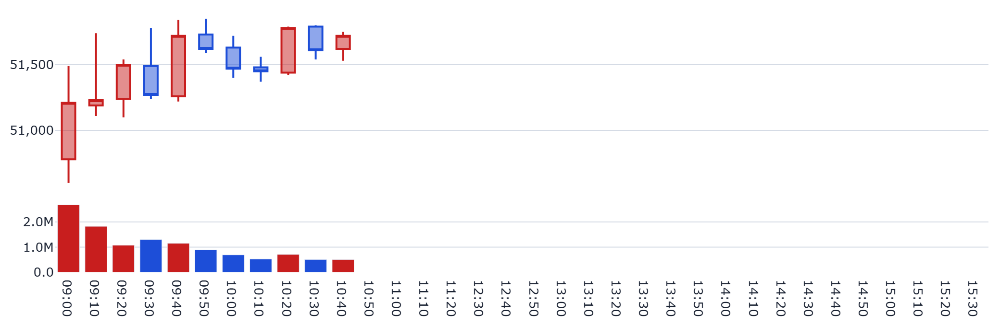
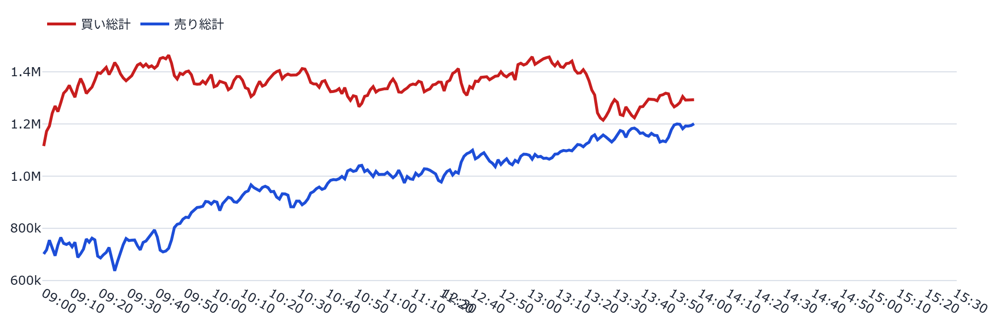

📊 掲示板投稿の詳細分析による投資情報（静的版）
📖 このダッシュボードの読み方（初めての方向け）
① 株価ヘッダー — 現在値・騰落率と最終更新時刻です。裏側のデータは 1分間隔のタスクで自動生成され、このページ自体も60秒毎に ブラウザが自動的に再読み込みして最新のスナップショットを表示します（手動更新は不要です）。 取引時間中に更新が止まっている可能性がある場合は「⚠️データの更新が…」という注意書きが 表示されます。
② 🔥灼熱メーター／😱阿鼻叫喚メーター — 掲示板の投稿内容から算出した 「過熱度」「セリングクライマックス度」の合成指標です。売買のシグナルではありません。
③ ボラ・レジーム帯 — 現在の値動きの荒さが「平穏〜急変」のどの水準にあるかの目安です。 データ蓄積初期は「較正中」と表示され、これは異常ではなく閾値を学習している途中であることを 示します。
④ シグナル発火状況（9指標） — 投稿の偏り・語彙・投稿量などを9つの観点で統計的に チェックした一覧です。🟢OK=平常範囲内／🟠警戒=やや偏りが大きい／🔴発火=閾値超過、を示す 記述的なラベルであり、売買の推奨ではありません。
⑤ 本日の推移 — 価格推移(10分足)・板の買い/売り総計(60秒平均)・本日のセンチメント推移を 東証立会時間の同じ横軸で並べています。価格推移の見出し下には本日の高値・安値も表示します。
⑥ 過去14日間の推移 — 直近14営業日ぶんの日足価格とセンチメント推移です。
⑦ 過去24時間のセンチメント推移 — 暦日をまたいだ直近24時間ぶんのローリング窓です。
⑧ PTS・米国ADR（表示される場合のみ） — 東証の取引時間外の値動きです。 PTS=私設取引システムでの夜間取引、ADR=米国預託証券(円換算)。あくまで翌営業日の値動きを 見る上での参考情報であり、それ自体が値上がり/値下がりを予測するものではありません。
⑨ 🤖AI考察 — 上記の集計値のみをもとにAIが生成した文章です。個別の投稿内容や ユーザー名は一切含まれません。
件数・数量系のグラフ(投稿量・板の買い/売り総計等)に統計的な外れ値が自動検出された場合は、 グラフ直下に「⚠️自動検出された外れ値」として注記が表示されます(値そのものは書き換えません)。
本ダッシュボードは研究・エンタメ用途の情報提供であり、投資助言ではありません。
更新時刻: 2026-08-27T19:54:13（データは1分間隔で自動生成され、このページも 60秒毎に自動再読み込みされます）
👀 累計閲覧数: 1,001
🔥😱 2大メーター・ボラレジーム


ボラ・レジーム帯

現在レジーム: 較正中 (BVP=0.421)
PTS=東証取引時間外の私設取引システム／ADR=米国預託証券。翌営業日の値動きの参考情報です(それ自体が売買シグナルではありません)。
📰 関連ニュース（直近24時間）
ニュース見出しの要約であり、投資助言ではない。
※ニュース見出しの要約であり、投資助言ではありません。各見出しから元記事(Google News経由)へ移動できます。
🎯 シグナル発火状況（9指標）
掲示板の投稿を集計した9つの指標が、統計的なしきい値を超えたかどうかを示す一覧です。 「発火」は売買のシグナルではなく、「統計的に見て平常時より偏りが大きい状態」を示す記述的な警告ラベルです。


※研究・エンタメ用途・未検証。売買シグナルではありません。 掲示板は方向よりボラを予測する傾向が文献で報告されています(Antweiler & Frank, 2004)。
📅 本日の推移（イントラデイ）
本日の価格推移（10分足ローソク足・出来高）
本日の高値 53,450円 ／ 安値 50,590円

板の買い・売り総計（成行込み全価格帯・60秒平均）
表示10本の気配だけでなく、外側の気配(OVER/UNDER)と成行注文も含めた板全体の数量合計です。 値は直近60秒間の平均。需給の偏りを直接示す指標ではありません。

本日のセンチメント推移（10分毎・強気/弱気比率・投稿量）

過去24時間のセンチメント推移（10分毎・強気/弱気比率・投稿量）

📈 過去14日間の推移
過去14日間の価格推移（日足ローソク足・出来高）

過去14日間のセンチメント推移（強気/弱気/中立比率・投稿量）

🤖 AI考察
前回集計(2026-08-27T19:43:46)との比較
本日の終値は前日比+5.0%と大きく上昇し、強気比率は54.3%まで上昇しました。直近の日次推移を見ると、数日前までは弱気比率が過半数を占める展開が続いていましたが、本日一転して強気の反応が優勢となっています。特筆すべきは「灼熱メーター（過熱）」が閾値を超えて発火している点です。価格の急騰に呼応するように掲示板上での期待感が高まっており、センチメントが短期的に非常に熱を帯びている状態にあると推察されます。
一方で、この強気への傾斜にはいくつかの複雑な背景が見て取れます。「イナゴ語彙（euphoria）」が警戒水準にあることや、他銘柄混入率の低下から「関心離散」の兆候が和らいでいることから、現在は特定の材料に対する集中した関心が再構築されている可能性があります。また、前回取引日と比較して過熱度が「OK」から「発火」へと変化している点は、本日の急騰が単なる緩やかな上昇ではなく、掲示板上の心理を強く刺激するインパクトを持っていたことを示唆しています。
ボラティリティのレジームについては現在「calibrating（較正中）」となっており、現在の価格変動に対する統計的な安定性を確定させる過程にあります。この状況下で過熱度スコアが発火していることは、ボラティリティの推移よりも先に掲示板上の心理的反応が先行して反応している可能性を示しています。
直近数分間の変化では、価格や強気比率に変動はなく投稿数が微増しているのみであり、現在のセンチメントは極めて安定した（あるいは静止した）熱狂状態にあると言えます。なお、PTSでは前日終値を上回る動きを見せており、翌営業日の寄り付きに向けた市場の関心材料として注視が必要な状況です。
本分析は掲示板の集計センチメントデータに基づく分析であり、投資助言ではありません。
生成時刻: 2026-08-27T19:54:13
⚠️ 本情報は掲示板投稿を統計的に集計したものであり、投資助言ではありません。個別の投稿内容は含まれていません。研究・エンタメ用途です。